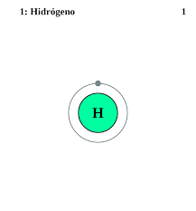
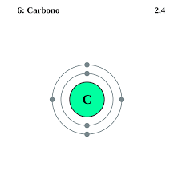
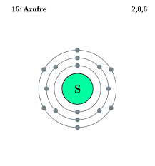
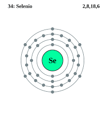
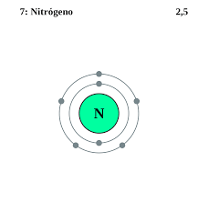
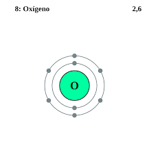
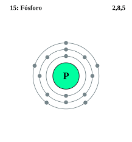

Los no metales son elementos químicos que no son buenos conductores de la corriente eléctrica y el calor. Son muy débiles, por lo que no se pueden ni estirar ni convertir en una lámina.
Las propiedades químicas de los no metales, a diferencia de los metales, son muy diversas, a pesar de que representan un número muy reducido, la mayoría de ellos son esenciales para los sistemas biológicos (oxígeno, carbono, hidrógeno, nitrógeno, fósforo y azufre). En el grupo de los no metales se incluyen los halógenos (flúor, cloro, bromo, yodo, astato y téneso), que tienen 7 electrones en su última capa de valencia y los gases nobles (helio, neón, argón, kriptón, xenón, radón), que tienen 8 electrones en su última capa (excepto el helio, que tiene 2). Por lo tanto, dicha capa está completa y son poco reactivos. El resto de los no metales pertenecen a diversos grupos y son hidrógeno, carbono, azufre, selenio, nitrógeno, oxígeno y fósforo. Las propiedades únicas del hidrógeno lo apartan del resto de los elementos en la Tabla Periódica de Elementos.
El hidrógeno es el elemento químico de número atómico 1, representado por el símbolo H. Con una masa atómica de 1,00797, es el más ligero de la tabla periódica de los elementos. Por lo general, se presenta en su forma molecular, formando el gas diatómico H₂ en condiciones normales.
Masa atómica: 1,00784 u
Número atómico: 1
Electronegatividad: 2,2
Configuración electrónica: 1s1
Descubrimiento: 1766
Descubridor: Henry Cavendish
El carbono es un elemento químico con el símbolo C y el número atómico 6. Es no metálico y tetravalente: su átomo hace que cuatro electrones estén disponibles para formar enlaces químicos covalentes. Pertenece al grupo 14 de la tabla periódica.
Masa atómica: 12,011 u
Número atómico: 6
Electrones por nivel: 2, 4
Configuración electrónica: [He] 2s22p2
Electronegatividad: 2,55
Radio atómico: 70 pm
El azufre es un elemento químico de número atómico 16 y símbolo S. Es un no metal abundante con un color amarillo característico.
Masa atómica: 32,065 u
Número atómico: 16
Electrones por nivel: 2,8,6
Configuración electrónica: [Ne] 3s²3p⁴
Electronegatividad: 2,58
Radio atómico: 100 pm
El selenio es un elemento químico con el símbolo Se y el número atómico 34. Es un no metal con propiedades intermedias entre los elementos de arriba y abajo en la tabla periódica, azufre y telurio, y también tiene similitudes con el arsénico.
Configuración electrónica: [Ar] 3d104s24p4
Número atómico: 34
Electrones por nivel: 2,8,18,6
Masa atómica: 78,96 u
Electronegatividad: 2,55
Descubridores: Johan Gottlieb Gahn, Jöns Jacob Berzelius
El nitrógeno es un elemento químico de número atómico 7, símbolo N, su masa atómica es de 14,0067 y que en condiciones normales forma un gas diatómico que constituye del orden del 78 % del aire atmosférico. Antiguamente era llamado ázoe.
Masa atómica: 14,0067 u
Configuración electrónica: [He] 2s22p3
Número atómico: 7
Electrones por nivel: 2,5
Electronegatividad: 3,04
Descubrimiento: 1772
El oxígeno es un elemento químico de número atómico 8 y representado por el símbolo O. Su nombre proviene de las raíces griegas ὀξύς y –γόνος, porque en la época en que se le dio esta denominación se creía, incorrectamente, que todos los ácidos requerían oxígeno para su composición.
Masa atómica: 15,999 u
Configuración electrónica: [He] 2s²2p⁴
Número atómico: 8
Electrones por nivel: 2, 6
Descubrimiento: 1774
Descubridores: Joseph Priestley, Antoine Lavoisier, Carl Wilhelm Scheele
El fósforo es un elemento químico de número atómico 15 y símbolo P. El nombre proviene del griego φώς [fos] luz y φόρος [foros] portador.
Número atómico: 15
Electrones por nivel: 2, 8, 5
Masa atómica: 30,973762 u
Configuración electrónica: [Ne] 3s²3p³
Electronegatividad: 2,19
Descubrimiento: 1669
